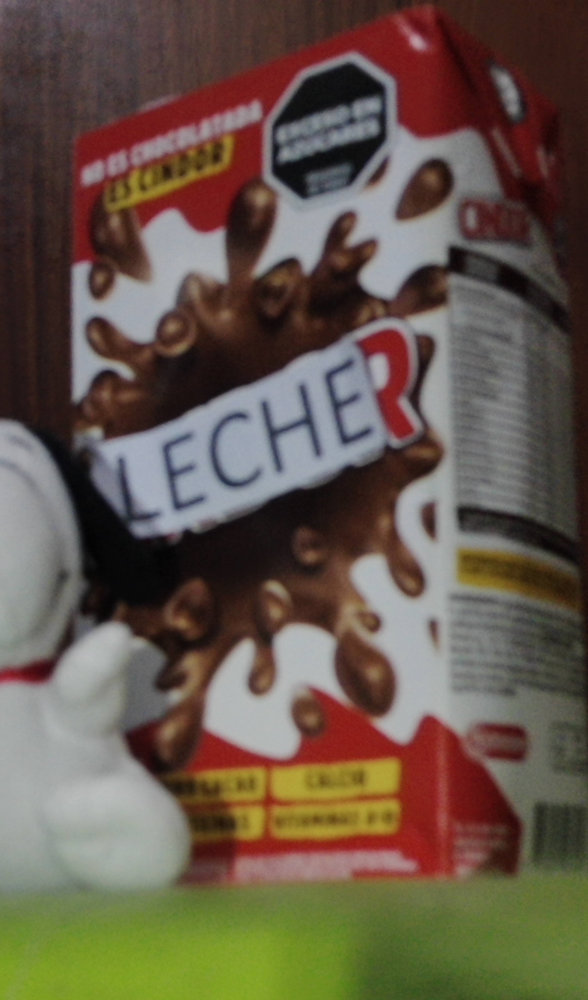
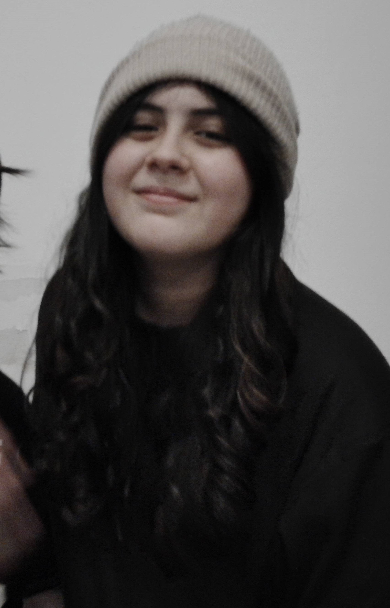

Valentino

Fundador y líder
Valentino es el fundador y líder de la Asociación Capipana.
Es megalómano, carismático y entusiasta, y es quien decide
las misiones y proyectos de la organización.
Participa personalmente en las misiones y diseña gran parte
de la propaganda y el material público de la Asociación.
Leche

Miembro de la Asociación Capipana
Leche es un cartón de leche con telequinesis y uno de los miembros
de la Asociación Capipana.
Suele acompañar a Valentino y Camila en las misiones y participa
activamente en los proyectos de la organización.
Camila

Miembro de la Asociación Capipana
Camila es la voz de la razón del grupo y cumple principalmente
una función de apoyo y ejecución dentro de la Asociación.
Ayuda a llevar adelante los proyectos de Valentino, prepara
materiales, participa en campañas y suele señalar los problemas
de sus planes antes de acompañarlo igualmente.